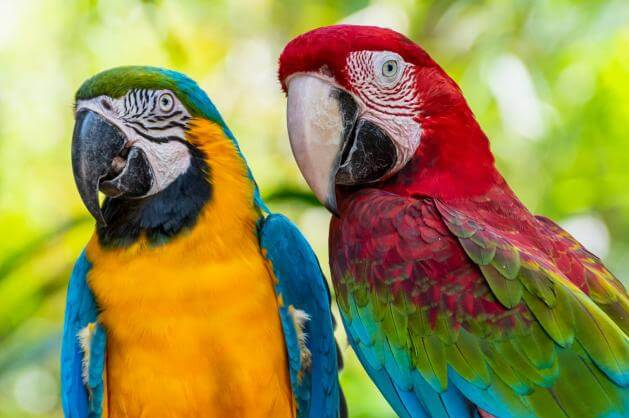
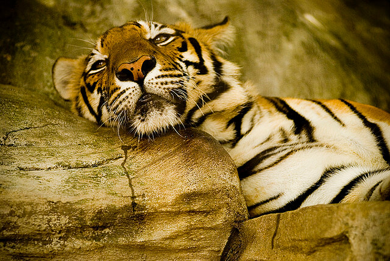

Jmenuji se Janča a odjakživa mám blízký vztah ke zvířatům. Vím, že i malá nepozornost může vést k situacím, které mohou zvířata ohrozit. Rozhodla jsem se proto využít moderní technologie k tomu, abychom o zvířatech věděli více, dokázali jim lépe porozumět a včas předešli nebezpečí. Tento projekt vedu s cílem zvýšit bezpečnost, ochranu a kvalitu života zvířat v našem okolí.

